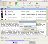
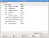

General Connection
The MudMagic Client provides Telnet connectivity to online text games. Current supported protocols
include: TCP/IP Telnet, MCCP, MXP, and MSP. Future releases will contain additional connectivity
protocols as requested by users.
There are 3 ways which you can use this software to connect to a text game. Clicking the WIZARD
to select you a new mud and create a character.
Clicking the QUICK CONNECT to create a new character, or using the
OPEN dialogue window to log into an existing saved character.

Game List Wizard
Shortcut key: CNTRL+N Located in: Character -> Wizard or
click on the Wizard Icon
The Game List Wizard provides you an up to date listing of all telnet text games in the
MudMagic Website database. To connect to a game using this feature.
1. Click on the Wizard button 2. Select you a game from the list by highlighting it 3. Click the CREATE button and input a character name [[ example: Kyndig (dwarf warrior) ]] 4. Select a proxy if required and then click 'OK' |
To overwrite any stored characters, you can select the WIZARD and CREATE a new character with the same name, or simply delete the character name from the OPEN dialogue.
Quick Connect
The Quick Connect window, located under Character -> Quick Connect
lets you input the host, port, and select a proxy from your global settings.
The Quick Connect is handy for a quick connection to log into a mud. It should not be used though if you plan on keeping a character on that text game. Each Quick Connect action creates a new entry in the 'Open' dialogue window.

Open Dialogue
Shortcut: CNTRL+O Location: Character -> Connect or
Open Icon
The Open Dialogue allows you to access previously stored settings on a game-by-game and
name-by-name basis. Have multiple characters for your favorite mud? You can create an
entry for each player.
{kind=link}
{kind=link}
{kind=link}